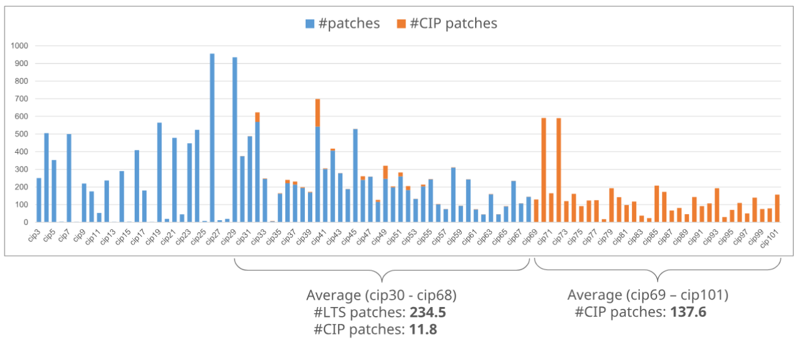

The Civil Infrastructure Platform after (nearly) ten years
The mission of CIP is to provide "industrial-grade Linux" as an open-source
base layer, Kobayashi began. CIP has run up a few achievements in its
first ten years, starting with the "super long-term support" (SLTS)
kernels, which are supported for a minimum of ten years. CIP has been
working toward alignment with industry standards, and IEC
62443 (which is concerned with "requirements and processes for
implementing and maintaining electronically secure industrial automation
and control systems
") in particular. The project has also made
significant upstream contributions to projects like Debian and KernelCI.
The longevity gap
Civilization, he said, runs on Linux. There are vast numbers of hidden
industrial systems running Linux in many settings, including energy,
transportation, building automation, and more. When CIP had its beginnings
in the early 2010s, industries using Linux in this way were contending with
a "longevity gap
"; kernel releases are frequent, but even the kernel's
long-term support runs out after six years in the longest (and
discontinued) case. Power plants, railways, and other systems with Linux
inside can run for ten, 20, or even 50 years, though. That has led
companies to create — and to have to maintain — their own proprietary Linux
forks, with the usual costs and security risks.
The CIP concept was first presented (slides) at LinuxCon Japan in 2015. The requirements at that time included a minimum of ten years of support, ongoing security updates, and a kernel with realtime capabilities. Over time those requirements have evolved, but they remain focused on industrial-grade reliability, functional safety, and realtime response. To get there, CIP has created an open-source base layer, a sort of minimal Linux distribution. This layer includes the CIP kernel, and a small set of core packages. This base layer, when used by companies in their project, can bring about a 70% reduction in the effort required to create and maintain the resulting system, he said.
CIP's history can be split into three phases, he said. The first, through 2017, was mostly focused on defining policies for the project. From 2018 to 2021, the effort went into the creation of working groups and the implementation of the base layer. Since 2022, the focus has been on compliance and resilience work.
The pillars
The project's working groups comprise the pillars that hold the whole thing up. The first is the kernel effort which, he said again, seeks to project a minimum of ten years of support. That work necessarily involves backporting a lot of patches, but the project's policy requires that any backported patches must first land in the mainline kernel. While most backports are fixes of one type or another, there is also a certain amount of work done to support newer hardware in older kernels.
The first SLTS kernel was 4.4, which was released in 2016; it was first adopted by CIP in 2017. Initially the support work was done by Ben Hutchings, but then it moved over to the CIP kernel team. This kernel will hit end of life in January 2027. It was intended to be a proof-of-concept showing that extended support of a kernel in an open setting can work; now, the project is supporting five SLTS kernels (the others are 4.19, 5.10, 6.1, and 6.12). For as long as those kernels have normal long-term support, CIP does not have much work to do; the project will take the kernels over once the regular support ends.
The kernel team, he said, is currently reviewing over 1,000 patches per month for backport consideration. The team also looks at about 2,000 CVE entries per month, just for the 6.1 kernel. There have been 466 SLTS releases to date. There are 11 boards supported by the five-person team working on the SLTS kernel. As an example of how this support has worked, he put up a slide showing each 4.4 release, indicating how many patches were backported by the CIP project itself; those comprise all of the patches applied, of course, once the community support for 4.4 ended.

The security process involves reviewing huge numbers of CVE entries, many of which are not applicable to the CIP kernel. The first review step is automated; it takes the CIP kernel configuration into account to weed out the CVEs that cannot be applicable. The remainder must then be manually reviewed.
The CIP Core Working Group is charged with providing the reference base image — the kernel with the core utilities on top of it. There was no desire within the project to create an entirely new distribution, so CIP chose to work with the Debian project instead. CIP's efforts help with Debian's long-term support, and continue after Debian moves on. There are two system profiles — "tiny" and "generic" — maintained by CIP, but the tiny profile is being phased out. As the capabilities of embedded systems have grown, the need for an extra-small base image has decreased. There are currently five Debian releases supported by this group.
Kobayashi pointed out that the reference images are created with a reproducible build process; there is a strong desire to keep the process transparent and ensure the the result can be trusted.
The Testing Working Group has put together a system called Board At Desk (B@D), which allows developers to connect boards to the central continuous-integration (CI) system. Developers can use B@D to test changes on real hardware from their own desktops. The working group has been building a centralized testing infrastructure, using GitLab runners, that is integrated with the KernelCI project. The results from CIP testing can be seen on the KernelCI site.
The Security Working Group is focused on the requirement that the CIP core image needs to be a secure reference image. There is an emphasis on IEC 62443 compliance; the hope is that a compliant base image will be helpful to users seeking their own compliance certification. The project has also put together some guidance for its users to help them obtain that certification. The IEC 62443-4-1 assessment of the base was completed in August 2024; the IEC 62443-4-2 assessment is underway now, with a hoped-for completion in 2026.
The Software Update Working Group is charged with the creation of a robust update framework for CIP-based systems. This work involves integrating with systems like SWUpdate, TUF, and wfx. The project has implemented A/B updating (maintaining two independent images allowing fallback to a working system if an update fails) and delta updates. Integration of TUF is done now; wfx integration is in progress.
The road ahead
Kobayashi concluded with a brief look forward — which actually started with the recent past. CIP first integrated the realtime preemption patches in 2017; the feature has been officially supported since late 2024, shortly after the completion of the realtime preemption merge.
The near-term future of CIP, beyond maintaining all those images, appears
to be dominated by the coming "regulatory wave
". That wave takes the
form of the European Cyber Resilience Act (CRA) in the near future. The
CIP base system, he said, will serve as a sort of shelter for
manufacturers, helping them to provide the updates mandated by the CRA.
The plan, he said at the end, is to evolve CIP into a "compliance
base
" maintained as an open-source project.
The slides from this presentation are available.
[Thanks to the Linux Foundation, LWN's travel sponsor, for supporting my
travel to this event.]
| Index entries for this article | |
|---|---|
| Kernel | Civil Infrastructure Platform |
| Kernel | Long-term support initiative |
| Conference | Open Source Summit Japan/2025 |
Posted Dec 17, 2025 15:37 UTC (Wed)
by kwilczynski (subscriber, #125094)
[Link] (4 responses)
For these folks who find that the link in the article is not working. (I am sure LWN folks will update/fix it eventually)
Posted Dec 17, 2025 15:42 UTC (Wed)
by daroc (editor, #160859)
[Link] (3 responses)
Posted Dec 17, 2025 15:45 UTC (Wed)
by kwilczynski (subscriber, #125094)
[Link] (2 responses)
"The slides from this presentation are available."
Will present me with a 404, sadly.
The main Open Source Summit schedule page for Japan works fine for me.
ISP-wise, I am based in Japan.
Posted Dec 17, 2025 15:46 UTC (Wed)
by kwilczynski (subscriber, #125094)
[Link] (1 responses)
To add, a colleague at work had exactly the same issue, he is based in the U.S.
Posted Dec 17, 2025 15:48 UTC (Wed)
by corbet (editor, #1)
[Link]
Posted Dec 18, 2025 7:59 UTC (Thu)
by ebee_matteo (guest, #165284)
[Link]
Amazing work from CIP!
Posted Dec 18, 2025 8:37 UTC (Thu)
by taladar (subscriber, #68407)
[Link] (15 responses)
In my experience updates become much more risky and painful the more you try to do at the same time and the most stable approach is to do them in very small but frequent steps, the way you do when you stay close to upstream versions where it is easy to isolate the one thing that changed that causes breakages instead of trying to have to pick it out from the 10000 things that changed since the last update that was so long ago that everyone involved forgot even the solutions for even those problems that occurred identically the last time you had to update.
Posted Dec 18, 2025 12:06 UTC (Thu)
by jorgegv (subscriber, #60484)
[Link] (6 responses)
You cannot schedule a maintenance window every week just to apply upgrades to the main control system in those scenarios. And this is why CIP exists in the first place.
Posted Dec 18, 2025 21:24 UTC (Thu)
by garyguo (subscriber, #173367)
[Link] (4 responses)
Posted Dec 18, 2025 22:05 UTC (Thu)
by raven667 (subscriber, #5198)
[Link] (3 responses)
Posted Dec 19, 2025 10:15 UTC (Fri)
by taladar (subscriber, #68407)
[Link] (2 responses)
Posted Jan 16, 2026 15:45 UTC (Fri)
by sammythesnake (guest, #17693)
[Link] (1 responses)
"Never attribute to malice that which is adequately explained by stupidity."
gains
"Be cautious attributing to others' stupidity that which is plausibly explained by your own ignorance."
We can call it the Anti-Dunning-Kruger clause... [2]
Of course, there will always be examples where these rules of thumb don't give you the full truth (insert jokes about "Military Intelligence" here...)
[1] https://en.wikipedia.org/wiki/Hanlon%27s_razor
Posted Jan 16, 2026 18:01 UTC (Fri)
by Wol (subscriber, #4433)
[Link]
What's the saying? "You are a rational being. If you are arguing with someone the probability of them also being a rational being is very high. So the probability it is *you* that is wrong is 50/50".
> We can call it the Anti-Dunning-Kruger clause
Apparently a UK insurance company - before agreeing to or renewing a company's Company Driver policy - used to insist all insured personnel went on a "good driving" course - basically a short "this is what good driving is" lecture. The number of people who came out the course saying "I didn't realise my driving was so bad" was, well, amazing. People drive badly because they lack the skill/knowledge to recognise what good driving is.
(Which is why I always recommend "The Police Driver's Handbook" to new drivers I know. It's not necessarily about good driving per se, but it's all about how to improve your driving.)
Cheers,
Posted Dec 19, 2025 18:00 UTC (Fri)
by sashal (✭ supporter ✭, #81842)
[Link]
Posted Dec 19, 2025 20:34 UTC (Fri)
by jmalcolm (subscriber, #8876)
[Link] (7 responses)
That is exactly the point. The idea for for things not to have changed since the last update.
> I would hate to have to be the person who has to catch up with the world after 10 years
The experience you relate is correct but in an entirely diferent context. In the environments where CIP makes sense, you are not "upgrading" these systems in the way that you imagine.
A better model is to imagine industrial equipement and control systems. Think manufactuing line, printing press, or safety system. Those kinds of things remain in place. They receive regular maintenance but do not get "upgraded" at all. Rather, they have a service lifetime over which they are expected to perform reliably after which they are typically "replaced" with something else. And even if some of the original system remains in place, there is a "moderniization" effort which more closely resembles a new install or project than it does a normal system upgrade in say a consumer facing service application.
10 years is long enough that mechanical systems and hard electronics are also likley to need replacing and "upgrades" (not just fixes). The value of the initial investment will have been fully depreciated and the ROI is there for new investment. You can imagine this for things like embedded equipment but also for things like automotive. A transit bus or a fire truck may remain in service for 10 years with all equipment expected to function without an "upgrade" over that time frame. For vehicles lasting longer, there will probably be one or more refurbishments where some equipment is replaced or modernized while reusing the shell. But each of these would be a full project in itself that may only come every 7 - 10 years. A good example of the latter might be a locomotive engine which can remain in service for decades with a few rebuilds along the way. You may add some "new" equipment along the way but you are not continuoulsy upgrading it like you would a computer server or cloud application.
These kinds of kernels are for that kind of scenario where something is expected to continue to function effectively in its environment for long periods, requiring only basic maintenance and simply operating as it always has.
And even in more "modern" and connected scenarios, perhaps we do not nee to update the kernel of a "host" on a system that is largely containerized? The kernel in that case can have a longevity that maps to the service lifetime of the hardware that it is running on (again maybe 7 - 10 years).
Imagine a remote system running containerized applications (maybe running off a solar panel and cellular connection). It may be possible to reboot such a system to apply a kernel upgrade but every change to the system presents the risk of triggering the need for an expensive physical visit (maybe hundreds of kilometres away). You would want changes to be minimized as much as possible. If this system has remote connectivity, application upgrades may be safe as errors can be recovered as long as the OS keeps running. But changes to the OS itself are far riskier.
The "applications" running on this system can be regularly updated without touching the kernel. They can have their own support life cycles and timelines (not necessarily similar to each other). But the host just needs to keep ticking with an absolute minimim of distruption to the rest of the system. A CIP kernel would be perfect for that.
Posted Dec 22, 2025 10:06 UTC (Mon)
by taladar (subscriber, #68407)
[Link] (6 responses)
The remote reboot scenario is trivially solved with an A/B update system where you can update one of two copies, try to boot it and if it does not connect after a certain time it automatically boots the other version. I have literally done this in the past with my own servers with a standard grub boot loader and watch dog (though a hardware watchdog would be better for an actual remote system).
Posted Dec 22, 2025 10:58 UTC (Mon)
by Wol (subscriber, #4433)
[Link] (5 responses)
Are you sure it's not YOUR scenario that is wishful thinking, based on a world that behaves ideally as you want it to?
Simple counter-example - any modern car. Just because it's DESIGNED to receive regular updates, how many cars will ACTUALLY be updated, once the "regular services included the purchase price" expire? The only connectivity my car has is that which came with the car supplied by VolksWagen, and when that stops working at about the 3-year mark, it's unlikely to receive any further updates.
Another story I heard - same sort of thing - when USB replaced RS232 there were complaints about how it would be difficult to replace control computers. The response from the computer side was "well, replace the peripherals". When the peripheral is £1/2M, it's hard to justify replacing it because you can't replace a £200 part ... Or you're talking about consumer goods with a purchase price measured in months of salary ...
"Move fast and break things" is fine until you're breaking things that cost 100 or more times the cost of the part you want to replace.
Cheers,
Posted Dec 22, 2025 11:17 UTC (Mon)
by Wol (subscriber, #4433)
[Link] (1 responses)
Cheers.
Posted Dec 22, 2025 13:02 UTC (Mon)
by pizza (subscriber, #46)
[Link]
That's 360K. :D
I don't know about the FAA, but Boeing 747-400s (ie most of the 747s still flying) use floppies to update their navigation (and possibly other) components.
Also, the US Military's Nukes famously relied on 8" floppies [1] until mid-2019.
[1] 80KB, not those newfangled "double density double sided" models used by those darned kids
Posted Dec 23, 2025 14:37 UTC (Tue)
by taladar (subscriber, #68407)
[Link] (2 responses)
Posted Dec 23, 2025 14:56 UTC (Tue)
by pizza (subscriber, #46)
[Link]
Even if all of these are true, the other side's argument of "new bugs [1] we don't know about could potentially kill [a lot of] people" is a considerable counterweight.
[1] Or *intentional* changes
Posted Dec 23, 2025 15:46 UTC (Tue)
by Wol (subscriber, #4433)
[Link]
Mebbe, but as pizza points out, fixing them could break a lot of other stuff - "better the devil you know ..."
> they still lag behind new legal requirements
And in many cases, there ARE NO new legal requirements, unless you deliberately invite them ... for example, in the UK, as a general rule cars have to comply with the legal requirements that *were* valid when new. Not new modern requirements that mean building a new copy of an old design is no longer legal. It's a fundamental tenet of UK legal practice that new laws are *not* meant to be retrospective. Not always true, but very unusual.
(We don't have that many, but most old cars are death traps per new modern legislation, but they are allowed on the road no problem. About the only retrospective law I can think of is the requirement for children to wear seatbelts, so if your car has no seatbelts you are not allowed to carry kids. The requirement for all people in the vehicle to wear seatbelts only applies if the vehicle actually has seatbelts ...)
Cheers,
Posted Dec 18, 2025 10:29 UTC (Thu)
by Gladrim (subscriber, #45751)
[Link] (7 responses)
The kernel guarantees not to break userspace, yes?
Unless you are in the unfortunate position of continuing to use a device that has been removed from the kernel (in which case, get LOUD when it is being deprecated), what is the point?
All those CVEs are already tracked and patched in mainline, and then (and only then) backported to stable. Why would anyone ever use anything older than stable?
Why the obsession with keeping a particular version number?
You can't. All these patches you're applying to keep your ancient retrocomputing kernel going came from mainline. All you are missing is new features, which presumably you compile out anyway.
The further down the LTS chain you go the further you are from where these patches were originally applied and tested, so you get to experience NEW and exciting bugs that weren't in mainline.
The oft repeated advice from @gregkh is to run the newest stable kernel you can. When 5.4.y was retired earlier this month it had over 1500 unpatched CVEs.
Why do we do this? Not just in CIP, but why do distros do this? What is the point of LTS?
Sincerely,
Confused of Userspace
Posted Dec 18, 2025 10:40 UTC (Thu)
by farnz (subscriber, #17727)
[Link] (2 responses)
[1] "Suitably skilled" here is weasel words - it's similar to how a "suitably skilled" engineer would write bug-free code on the first attempt, with a complete test suite that covers all user use cases, and great documentation.
Posted Dec 18, 2025 13:35 UTC (Thu)
by Gladrim (subscriber, #45751)
[Link] (1 responses)
There are thousands of backports to process and test - way more than can be sensibly reviewed by two people, no matter how skilled and diligent, even with a helpful LLM bringing patches like a puppy brings slippers.
eg. 6.18.2-rc1 has 618 patches, with more coming every week, and 7 stable and LTS kernels to apply them to.
So stuff breaks all the time. As in, new bugs that appear in stable and LTS that weren't present in mainline.
I don't understand why anyone would find it preferable to run a two year old kernel, let alone a ten year old stack of patches.
Posted Dec 18, 2025 14:15 UTC (Thu)
by farnz (subscriber, #17727)
[Link]
You have workarounds for every bug that directly affects you; each newly added bug potentially needs a new workaround, while having a bug fixed at best enables you to remove a workaround that you've had working for some time.
Given that bug fixes are low value to you, and what matters is the absolute number of new bugs, a process that purports to provide a kernel with few new bugs is valuable. That the current process isn't working (in part because of a lack of people working on it) doesn't invalidate that - someone like CIP can afford to pay for enough people to validate their CIP kernel backports properly.
Posted Dec 18, 2025 10:57 UTC (Thu)
by bluca (subscriber, #118303)
[Link] (3 responses)
It does not. Every new kernel release breaks userspace in various ways, on a varying scale from insignificant to catastrophic.
The only thing that almost never breaks is the syscalls ABI, but it's extremely naive to pretend in 2025 that the syscall ABI is the only userspace interface that exists.
Posted Dec 18, 2025 13:17 UTC (Thu)
by Gladrim (subscriber, #45751)
[Link] (2 responses)
Sure, there are bugs. Or are you talking about deliberate, non- backwards compatibile changes?
If I have a system that works fine on 6.18.y, and I test it against 6.19-rc1, I email the kernel regressions@ list and that gets fixed, no?
Posted Dec 18, 2025 14:15 UTC (Thu)
by bluca (subscriber, #118303)
[Link]
Posted Dec 18, 2025 15:16 UTC (Thu)
by abatters (✭ supporter ✭, #6932)
[Link]
Link to the final slides
Link to the final slides
Link to the final slides
Link to the final slides
>
> "The slides from this presentation are available."
>
> Will present me with a 404, sadly.
The link failed for me to (and I'm back in the US); I've updated it, thanks.
Link to the final slides
Thank you CIP
10(+) years worth of changes at once
10(+) years worth of changes at once
10(+) years worth of changes at once
10(+) years worth of changes at once
10(+) years worth of changes at once
10(+) years worth of changes at once
[2] See https://en.wikipedia.org/wiki/Dunning%E2%80%93Kruger_effect
10(+) years worth of changes at once
Wol
10(+) years worth of changes at once
10(+) years worth of changes at once
a remote system.
10(+) years worth of changes at once
10(+) years worth of changes at once
Wol
10(+) years worth of changes at once
Wol
10(+) years worth of changes at once
10(+) years worth of changes at once
10(+) years worth of changes at once
10(+) years worth of changes at once
Wol
LTS: please explain
The theory is that this sort of backporting, if done by suitably skilled[1] engineers, results in no new bugs being introduced into the long-term stable software. This, in turn, means that you can upgrade the long-term stable software without fear of having to find a new workaround for a bug that affects you - either you're seeing a bug with a workaround you already know about (e.g. "when this happens, push the 'Connect' button again, and it will work the second time), or you're seeing a bug that was hidden in the previous version by another bug (e.g. "before, you could not log in if your username contained 'far'. Now, you can log in, but you have a read-only view, even if Permissions Manager says you should be able to do things").
LTS: please explain
LTS: please explain
Because it is preferable in some situations to have 10 new bugs per upgrade, and 20 bugs fixed than to have 11 new bugs per upgrade, and 2,000 bugs fixed.
LTS: please explain
LTS: please explain
LTS: please explain
LTS: please explain
LTS: please explain